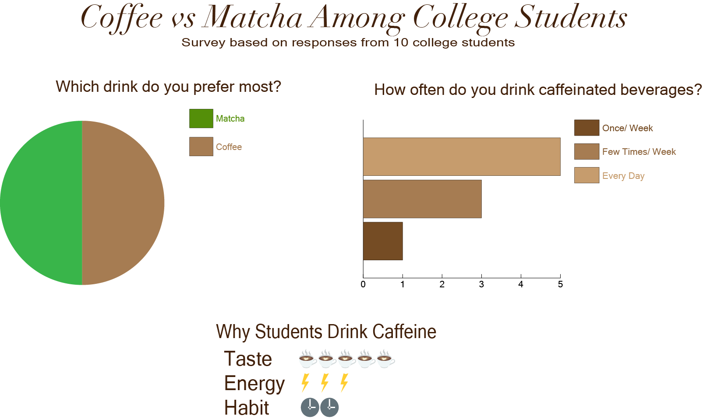

For this assignment, I created a data visualization based on a short survey about coffee and matcha habits among college students. I collected responses from 10 people and used the data to compare drink preference, caffeine frequency, and reasons for drinking caffeine.